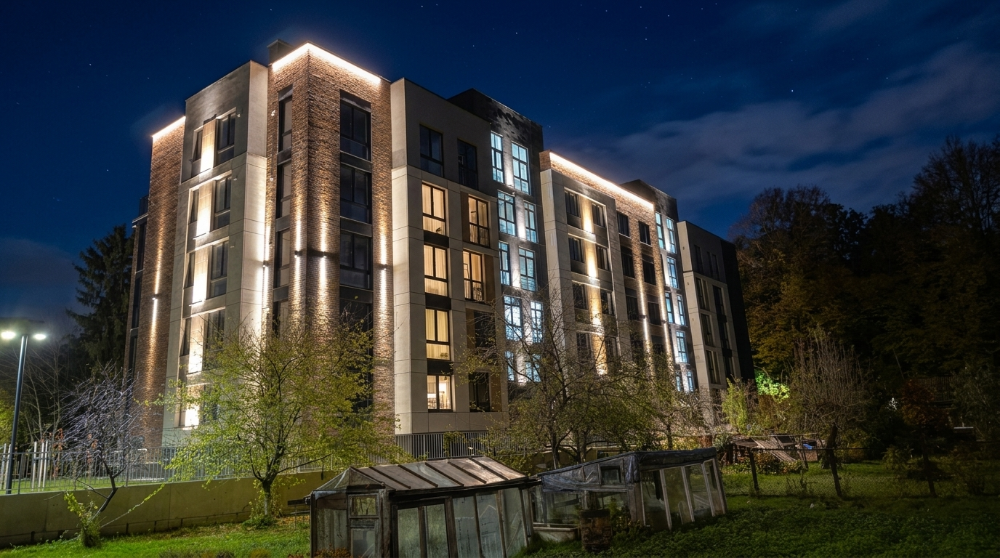

Световое решение
Вертикальные световые акценты подчёркивают фактуру кирпича, а контурная подсветка выделяет карнизы.
Обсудить освещение объекта ↗Жилая недвижимость

Вертикальные световые акценты подчёркивают фактуру кирпича, а контурная подсветка выделяет карнизы.
Обсудить освещение объекта ↗